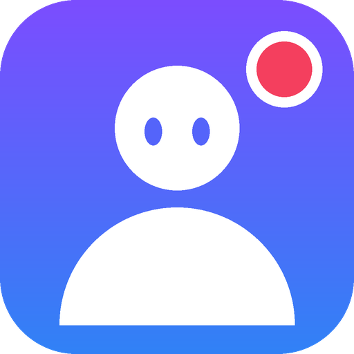

VCast Studio
3Dアバター配信に特化した、軽量なWindows向け配信ソフト（仮称）
GitHub でソースを見る README特徴
かんたんモード
アバター・マイク・配信先・映すものを上から順に設定して「配信開始」。
プロモード
シーン編集、スタジオモード、音声ミキサー、サウンドボード、ホットキー、プロファイル。
VRMアバター
VRMを読み込んで表示。Webカメラの表情トラッキング、キー・マウスに合わせた動き、WASDで歩かせるモード。
外部から操作
obs-websocket v5 互換のリモコン（Stream Deck など）に対応。パスワード必須。
仕様
| 対応OS | Windows 10 / 11（64bit） |
| エンジン | libobs（OBSのコア）を .NET 8 から利用 |
| 画面 | WPF |
| アバター描画 | three.js + three-vrm（実験的に D3D11 ネイティブ描画） |
| ライセンス | GPL-2.0-or-later |
現在の状態
開発中の試作です。自動テストと連続運転テストは通っていますが、実際のYouTube/Twitch配信・Webカメラ・別PC/GPU・Windows 10 での確認はまだです。配布用のzipは未公開で、いまはソースコードのみ公開しています。コード署名はしていないため、将来配布した際にWindowsの警告が出ます。